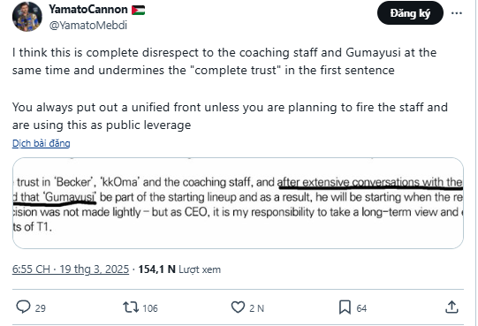
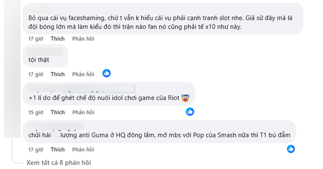

Người trong nghề "vạch mặt" CEO T1, nghi vấn có "âm mưu lớn" đằng sau
Không chỉ khán giả LMHT hay fan mà giới chuyên môn cũng chỉ trích CEO T1.
Giới chuyên môn không ngại "vạch mặt" CEO T1
Mới đây, CEO T1 đã có những chia sẻ xung quanh vụ việc của T1 - Gumayusi - Smash. Thế nhưng, không những không cung cấp thêm thông tin nào mới, vị CEO còn có những ý tứ bị cộng đồng chỉ ra là ngụ ý đổ lỗi cho BHL của đội cũng như lập luận "câu trước vả câu sau". Ngay cả giới chuyên môn cũng cảm thấy những lập luận của vị CEO quá vô lý. Thậm chí, YamatoCannon - cựu HLV danh tiếng của LEC còn cho rằng có "thuyết âm mưu" đằng sau.

Cụ thể, cựu HLV của FNC nhận định: "Tôi cảm thấy câu "chúng tôi đã thảo luận rất nhiều và tôi yêu cầu đưa Gumayusi vào đội hình xuất phát của Regular Seasons" là một sự thiếu tôn trọng dành cho Xạ Thủ Gumayusi và Ban huấn luyện T1. Câu này lại đi ngược lại hoàn toàn với câu "tôi tin tưởng hoàn toàn vào Gumayusi" và "tin tưởng tuyệt đối BHL" của ông Joe. Ngoài ra, theo kinh nghiệm thì người ta thường dùng kiểu này để tạo đòn bẩy, khi muốn sa thải một ai đó".
Cộng đồng cũng chỉ ra nhiều điểm bất hợp lý trong tuyên bố của CEO T1
Không chỉ những lập luận có phần "tự hủy", theo một số ý kiến, quả thực thông báo của CEO T1 là một sự xem thường Gumayusi. Bởi lẽ, vị CEO liên tục nhấn mạnh Gumayusi phải chứng tỏ nhiều hơn nữa trong khi không hề đề cập gì đến phương diện này nơi Smash. "Tại sao một Xạ Thủ 2 cúp CKTG liên tiếp vẫn phải chứng tỏ nhiều hơn và cạnh tranh với Xạ Thủ mà thành tích tốt nhất là top 4 Challengers?", một fan chất vấn.
Theo nhiều ý kiến, ở T1 đang tồn tại một sự bất công nhất định dành cho Gumayusi. Và rất có thể, trong tương lai, nếu có bất kỳ sự thay đổi nào về mặt nhân sự sau các trận đấu mà T1 thể hiện không tốt, khán giả đều sẽ phản ứng tiêu cực hơn bình thường.
Chưa kể, ở thời điểm hiện tại, vì những chính sách của thượng tầng, Smash đang phải nhận những phản ứng rất toxic từ phía cộng đồng - điều hoàn toàn không tốt cho sự phát triển của một tuyển thủ trẻ như tân binh của T1 ở LCK Cup vừa qua.